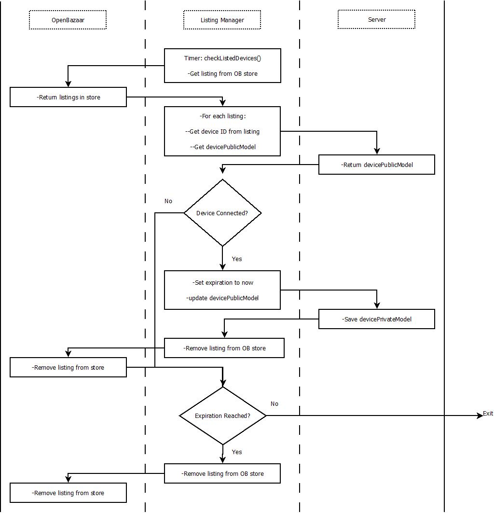
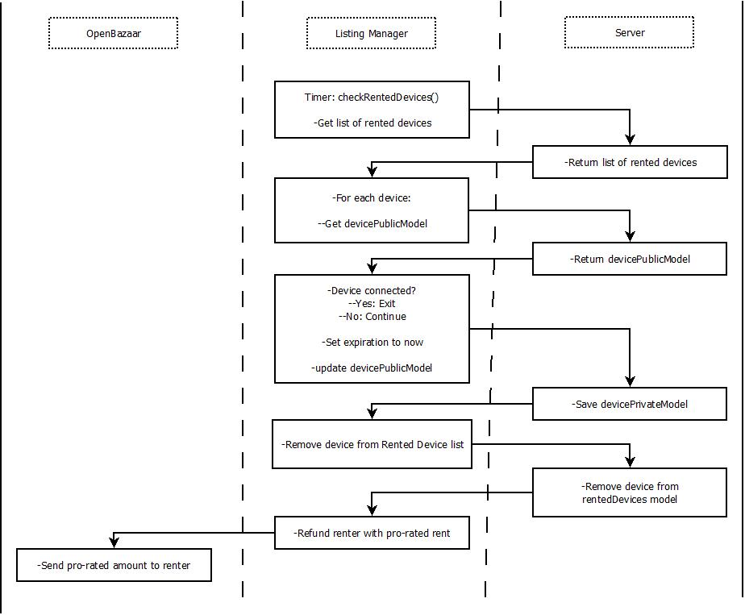

Listing Manager
The Listing Manager is a node application included in the server deployment repository. This application is responsible for managing the OpenBazaar store by adding new listings, removing invalid listings, and fulfil new orders as they come in. This document describes the different workflows between the Listing Manager, the server, and the OpenBazaar store.
Table of Contents #
- Fulfill-Orders
- Delist-Disconnected-Clients
- Detect-And-Refund-Disconnected-Rentals
- Fulfill-Renewals
- Remove-Orphaned-Renewals
Fulfill-Orders #
This is the primary task of the Listing Manager. It periodically polls the OpenBazaar store for new order notifications. If one is detected, the Listing Manager adds the login, password, and port information to the order and then marks it as Fulfilled.

Delist-Disconnected-Clients #
If a client listed for rent on the OpenBazaar store fails to check in with the server after some grace period, it must be considered in a disconnected state. The Listing Manager then removes the rental listing from the OpenBazaar store.

Detect-And-Refund-Disconnected-Rentals #
If a client that is actively being rented fails to check in with the server after some grace period, it must be considered in a disconnected state. The Listing Manager resets the device (when it comes online) by manipulating the expiration date. It also needs to automatically generate a pro-rated refund to the renter.

Fulfill-Renewals #
In addition to polling the OpenBazaar store for new rental orders, the Listing Manager also needs to poll purchases of renewal contracts. This allows renters to renew the rental agreement and continue using the rented Client.
Diagram Here
Remove-Orphaned-Renewals #
If a renewal listing hangs out on the OpenBazaar store for more than hour, it is considered 'orphaned'. In this case, the Listing Manager needs to remove that listing from the OpenBazaar store.
Diagram Here